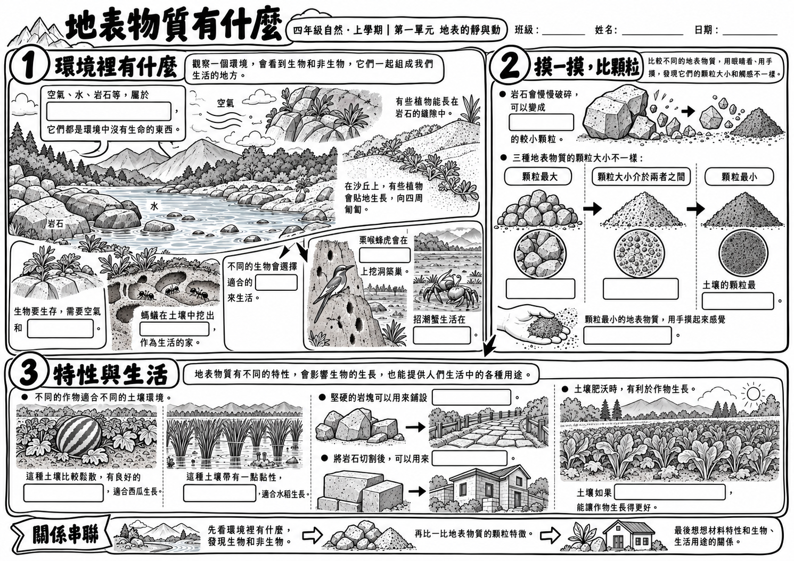
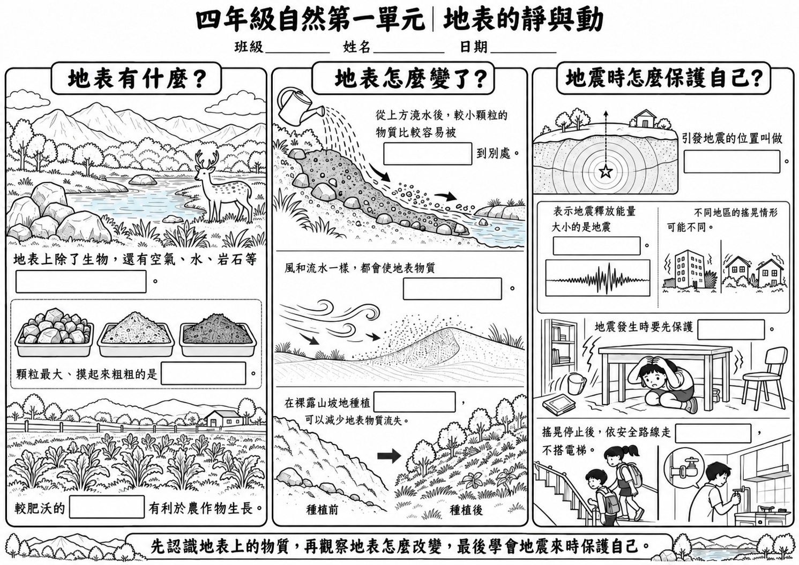
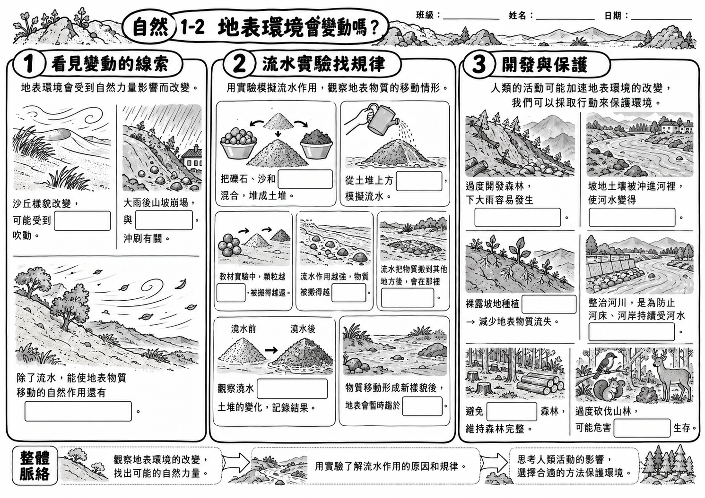
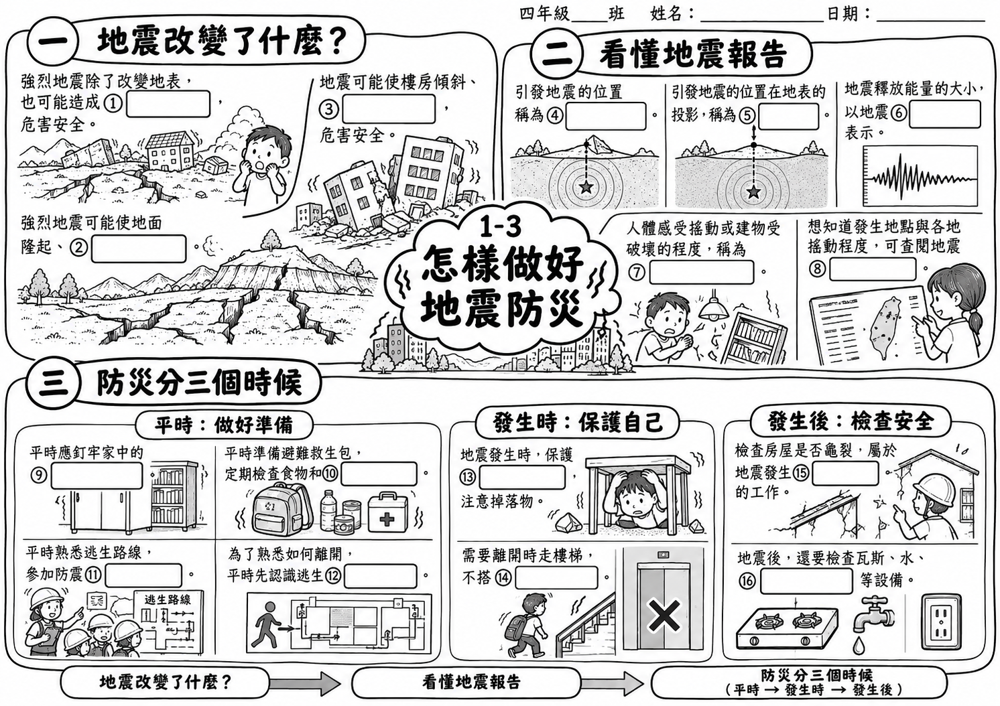

活動 1-1
地表物質有什麼


先前的自動流程把整個單元整理成一張 10 格總覽；已完成的 ChatGPT 成品則把第一單元拆成三張活動學習單，每張 16 格。下面放上實際頁面，讓老師直接比較範圍、題量與圖像安排。
測試狀態：自動流程的整單元 10 格試作已完成上傳、分析、出圖、下載與 PDF 封裝測試。以下三張 16 格活動版是既有 ChatGPT 成品，現在上架供比較；它們不代表自動流程的活動級批次製作已完成測試。所有教材內容與插圖仍需教師終審。
同一張跨過「地表物質、地表變動、地震防災」三個活動，適合快速總覽；若要練習每個活動內的概念關聯，題目和脈絡會較濃縮。

以下使用原有 ChatGPT 學生版圖檔與 PDF，沒有重新排版。每張只處理一個活動，三張共 48 格；總格數較多是因為範圍不同，不能直接當成同範圍的難度比較。



| 比較面向 | 自動流程試作 | 既有活動版成品 |
|---|---|---|
| 範圍 | 第一單元三活動合在一張 | 1-1、1-2、1-3 各自一張 |
| 填空格數 | 整張 10 格 | 每活動 16 格，三張共 48 格 |
| 學習脈絡 | 一頁快速看見單元三主題 | 每張依活動內的觀察、比較、因果或時序關係展開 |
| 圖像呈現 | 黑白圖文總覽，方便快速掃讀 | 黑白線稿搭配題目與概念區，分開支持各活動脈絡 |
| 目前證據 | 已做單次整單元技術流程測試；教材仍待核對 | 既有成品已上架比較；尚不代表自動批次流程完成驗證 |
最關鍵的是先限定「一張只做一個活動」，再說明每張的格數、概念關係和圖像限制。每次只替換括號內的活動名稱、頁碼與題數。
請根據我提供的四上自然教材，製作「第一單元：地表的靜與動」中的一張圖像式填空學習單。
本次只做【活動代碼與活動名稱】，課本範圍是【印刷頁碼】；每個活動必須各自成為一張獨立學習單，不得把其他活動合併進來。
請先依教材整理本活動的核心概念與關係，再重組成三個清楚區塊。每區放一個核心概念、重要重點和教材例子，讓學生練習把概念連起來，不要照抄頁面順序。
填空共【每活動格數】格。題目要涵蓋教材支持的分類、比較、因果或時序關係；每格答案要明確，教師答案表需附對應教材頁碼。若教材未明確提供，請標示「教材未明確提供」，不要猜。
製作 A4 橫式學生版：文字適合四年級、黑白列印清楚、留足書寫空間。內容太多時先刪重複、縮短句子，不要縮小字硬塞；仍放不下時，將同一活動拆頁，不要合併別的活動。
插圖只使用教材支持的例子，不新增動物、地點、數據或安全指示，也不要讓圖片直接提示答案。學生版不顯示答案或填空編號；另製作與學生版完全同版面的教師答案版及獨立答案表。
完成後逐一核對：活動範圍、實際填空格數、答案與教材頁碼、學生版是否藏答案、教師版是否逐格相符、A4 橫式是否裁切或重疊。仍有疑問的教材內容請列給老師人工確認。題數範例依現有活動版設定為每活動 16 格；老師可依學生程度調整。教材內容、答案與插圖仍要回課本核對。